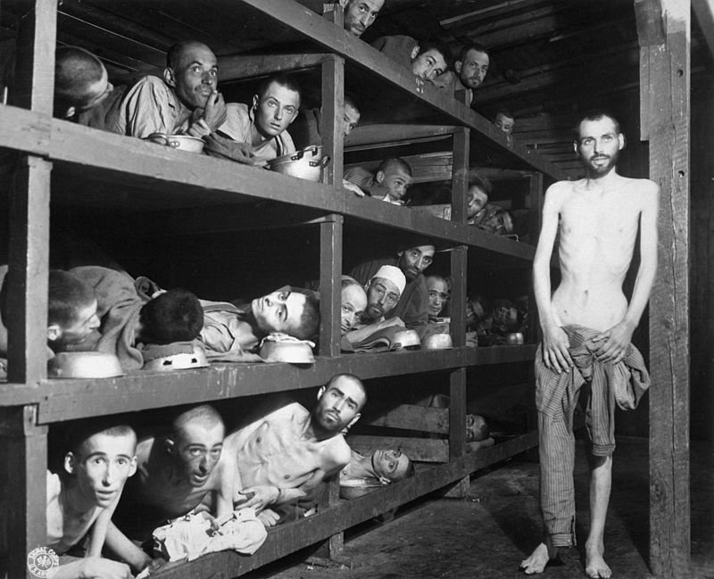
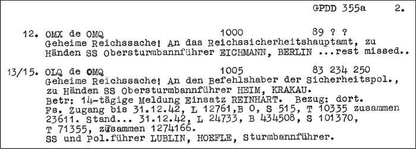
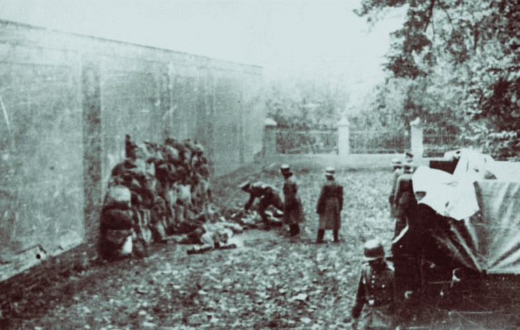
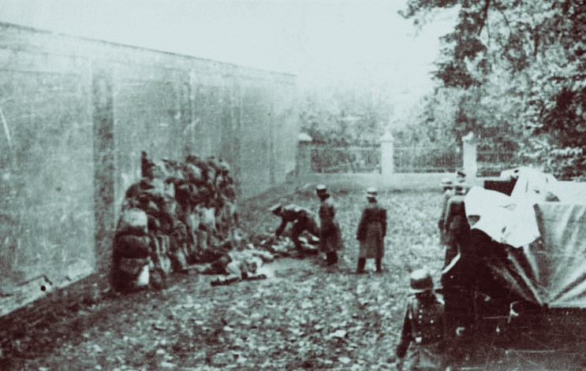
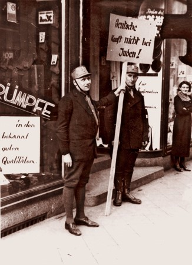
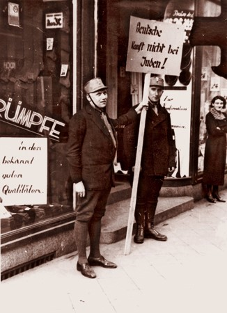
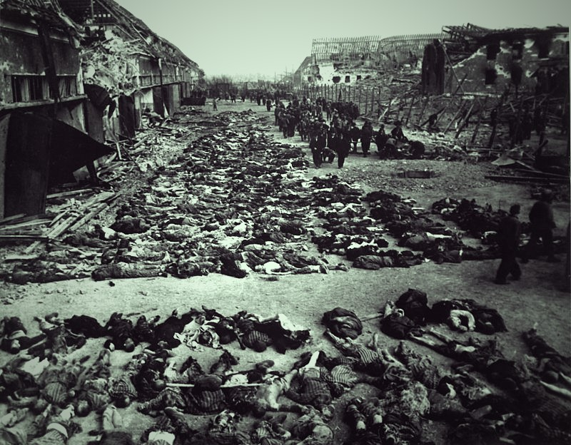

Axiomele ideologice ale nazismului au fost superioritatea rasială ariană și antisemitismul. Ura profundă față de evrei a fost tema dominantă a carierei politice a lui Hitler. S-au făcut speculaţii că motivul care a stat la baza acestei maini bolnave a fost un eveniment din tinereţea lui Hitler, atunci când din cauza unei prostituate evreice, el s-a îmbolnăvit de sifilis, însă acest lucru este puţin probabil. Cea mai plauzibilă explicaţie ne-o oferă Geoff Layton în lucrarea sa „Germania: Al Treilea Reich, 1933-1945”:„Hitler a fost produsul, şi nu creatorul unei societăţi deja infestate. În orice caz, ar fi eronat să-l considerăm un antisemit oarecare. Ura faţă de evrei era obsesivă şi vindicativă şi i-a influenţat întreagă filosofie politică. Că el a fost în stare să o pună în practică, nu poate fi explicat decât prin circumstanţele singulare ale Germaniei postbelice: umilinţă de la Versailles, problemele grave de ordin socio-economic dintre anii 1918-1923 şi 1929-1933. Într-o astfel de situaţie, Hitler a fost în măsură să exploateze existenţa unei ostilităţi latente împotriva evreilor şi să o transforme într-o politică radicală a urii”.

Oricâte explicaţii s-ar încerca, faptele şi cifrele sunt covârşitoare: numărul oamenilor ce au căzut victime politicii hitleriste este tulburător. 6 milioane de evrei şi-au găsit sfârşitul în lagărele morţii de la Auschwitz, Chełmno, Majdanek, Treblinka ori în ghetoul din Varşovia.Împingerea Germaniei în război a fost, de fapt, primul semn al declinului lui Hitler. Cu toate victoriile de început dintre anii 1939-1941, Hitler a făcut marea greşeală de a-şi subestima inamicii, Marea Britanie şi Uniunea Sovietică, precum şi greşeala de a începe un război pe două fronturi, cu aceste puteri. Orbit de succesele înregistrate de “războiul fulger” (Blitzkrieg), Hitler a dat semnalul „Operaţiunii Barbarossa”, care prevedea supunerea Uniunii Sovietice printr-o campanie rapidă, înainte de venirea iernii. Invazia s-a petrecut la 22 iunie 1941 şi a însemnat începutul sfârşitului. Luna decembrie a aceluiaşi an i-a dat lui Hitler (ne)șansa: a intrat în război SUA deoarece ”Roosevelt oricum îi ascultă pe evrei”. Înverşunarea sovieticilor, noroiul şi frigul au oprit înaintarea Germaniei. Hitler a rămas convins că victoria finală este posibilă, ceea ce dovedeşte că-şi pierduse clarviziunea militară ce îl caracterizase la începutul războiului. În 1943, armata germană se află deja în defensivă, pierzând iniţiativa şi, treptat, toate visurile bolnave de preamărire ale lui Hitler s-au sfârşit, lăsând în urmă o Europa distrusă şi şaizeci de milioane de victime. La 30 aprilie 1945, când soldaţii sovietici se aflau la doar un kilometru distanţă, Hitler s-a sinucis. În mai 1945, Germania era total ruinată, şi nicidecum o „Germanie Mare” care să distrugă Rusia bolşevică şi care să creeze o nouă ordine mondială, bazată pe conceptul supremaţiei arienilor.
Etimologia
Termenul german oficial pentru exterminarea evreilor în perioada nazistă era Endlösung der Judenfrage („Soluția finală problemei evreiești”). În germană, ca și în alte limbi, printre care engleza, termenul soluția finală este folosit ca alternativă la cel de holocaust. În România, Conducătorul Antonescu a folosit sintagma „curățirea terenului”
Etapele genocidului
Persecuția și genocidul s-au desfășurat în etape. Legislația privind eliminarea evreilor din societatea civilă a fost promovată cu mai câțiva ani înainte de izbucnirea celui de-Al Doilea Război Mondial (1933-1939). Au fost înființate lagăre de concentrare în care deținuții erau folosiți ca sclavi până mureau de extenuare sau de boală. Unde Al Treilea Reich ocupa un nou teritoriu în Europa de Est, unități speciale (numite Einsatzgruppen) exterminau evrei și adversari politici, împușcându-i în masă. Evreii și romii erau concentrați în ghetouri înainte de a fi transportați la sute de kilometri, cu trenuri de marfă, în lagărele de muncă forțată și exterminare, unde, dacă supraviețuiau călătoriei, cei mai mulți erau uciși prin gazare, în încăperi special amenajate. Fiecare ramură a aparatului administrativ al statului hitlerist a fost implicată în logistica asasinatelor în masă și a contribuit la transformarea Germaniei în ceea ce un istoric a denumit „un stat genocidar”.
Reactia evreilor
Utilizarea cuvântului în sens mai larg a atras obiecțiile multor organizații evreiești, în particular al celor înființate pentru comemorarea holocaustului evreilor. Organizațiile evreiești afirmă că acest cuvânt, în sensul său prezent, este folosit pentru a descrie exterminarea evreilor și că holocaustul evreilor a fost o crimă de o asemenea anvergură și atât de specifică, ca punct culminant al unei lungi istorii a antisemitismului european, încât nu ar trebui să fie subsumată într-o categorie generală cu alte crime comise de naziști.
Evrei

Naziștii au înregistrat metodic desfășurarea Holocaustului în mii de rapoarte și documente. În imagine, transcrierea de către un serviciu militar britanic de interceptare și descifrare a telegramei lui Hermann Höfle transmisă în ianuarie 1943 lui Adolf Eichmann; Höfle raporta că 1 274 166 de evrei fuseseră uciși în cele patru tabere ale operațiunii Aktion Reinhard în anul 1942. O altă trăsătură distinctă a fost efectuarea, la scară largă, a experiențelor medicale pe deținuți. Medici germani au efectuat astfel de experimente în lagărele de concentrare de la Auschwitz, Dachau, Buchenwald, Ravensbrück, Sachsenhausen și Natzweiler.
Cifrele Holocaustului Naziștii au înregistrat metodic desfășurarea Holocaustului în mii de rapoarte și documente. În imagine, transcrierea de către un serviciu militar britanic de interceptare și descifrare a telegramei lui Hermann Höfle transmisă în ianuarie 1943 lui Adolf Eichmann; Höfle raporta că 1 274 166 de evrei fuseseră uciși în cele patru tabere ale operațiunii Aktion Reinhard în anul 1942. O altă trăsătură distinctă a fost efectuarea, la scară largă, a experiențelor medicale pe deținuți. Medici germani au efectuat astfel de experimente în lagărele de concentrare de la Auschwitz, Dachau, Buchenwald, Ravensbrück, Sachsenhausen și Natzweiler.
Numărul celor uciși în principalele lagăre de muncă forțată și exterminare este estimat după cum urmează:
Auschwitz-Birkenau: 1.4 milioane
Belzec: 600.000
Chełmno: 320.000
Sobibor: 250.000
Treblinka: 870.000
Majdanek: 360.000
Maly Trostineț : 65.000
Einsatzgruppen Auschwitz-Birkenau: 1.4 milioane
Belzec: 600.000
Chełmno: 320.000
Sobibor: 250.000
Treblinka: 870.000
Majdanek: 360.000
Maly Trostineț : 65.000
Unități naziste unde alți între 800 000 și 1 milion de evrei au fost uciși în teritoriile sovietice ocupate (cifră aproximativă, deoarece omorurile comise de Einsatzgruppen erau adesea nedocumentate). Mulți alții au murit prin executare ori din cauza bolilor și malnutriției în ghetourile din Polonia, înainte să fi putut fi deportați.
Cel puțin o jumătate de milion de evrei au murit în alte lagăre, inclusiv în marile lagăre de concentrare din Germania.
Polonezi si slavi
Una din ambițiile lui Hitler de la începutul războiului a fost de a obține spațiul vital în est, prin eliminarea cât mai multor polonezi(considerați de naziști Untermenschen, "sub-oameni") și slavi. De aceea, el a pregătit, "pentru moment, doar în est, formațiunile mele Cap de mort cu ordine de a ucide fără milă toți bărbații, femeile și copiii de origine poloneză sau de limbă poloneză. Doar în acest fel putem obține spațiul vital de care avem nevoie."

Rromi 
Donald Niewyk și Frances Nicosia scriu că numărul morților a fost de cel puțin 130 000 din cei aproape un milion de romi din Europa controlată de naziști.Înainte de a fi trimise în lagăre, victimele erau înghesuite în ghetouri, cum au fost câteva sute de mii de oameni în Ghetoul Varșovia. Mai spre est, echipele Einsatzgruppen căutau taberele de romi și ucideau locuitorii acestora pe loc, nelăsând nicio urmă a victimelor. Romii erau și ținta regimurilor-marionetă care au colaborat cu naziștii, de exemplu regimul Ustaše din Croația, unde un număr mare de romi au fost uciși în lagărul de concentrare Jasenovac.
Persoane cu handicap fizic și mintal "...vor să arunce în ghetou tot ce este caracterizat drept murdar, bizar, de speriat și care trebuia cumva distrus."
Aktion T4 a fost un program inițiat în 1939 pentru a menține “puritatea genetică“ a populației germane. În baza programului, cetățenii germani și austrieci cu malformații congenitale și maladii dentale trebuiau sterilizați sau eutanasiați.Între 1939 și 1941, au fost uciși între 80.000 și 100.000 de adulți bolnavi mintal din instituții; 5.000 de copii și 1.000 de evrei din instituții.
"Punctul nostru de plecare nu este individul: Nu împărtășim viziunea că trebuie să-i hrănim pe cei flămânzi, să dăm apă celor însetați sau să-i îmbrăcăm pe cei dezbrăcați... Obiectivele noastre sunt altele: Trebuie să avem un popor sănătos pentru a triumfa în lume."
Originea
Când Hitler avea 30 de ani și participa la Primul Război Mondial, el a activat în unitatea de propagandă a armatei germane. Când în armata germană a fost descoperit un spion evreu, pe nume Adolf Gemlich, căpitanul Karl Mayr i-a trasat lui Hitler sarcina de a expune o poziție pe care o dorește oficială asupra tuturor evreilor. În data de 16 septembrie 1919, Hitler i-a adresat superiorului său, căpitanul Karl Mayr, o scrisoare cu poziția oficială propusă de el, în care apare explicit, în limba germană, expresia "Entfernung der Juden" (înlăturarea evreilor). Principalul obiectiv urmărit de adepți fiind "banii și puterea". Hitler a precizat clar: "Nu vreau niciun evreu în țara în care trăiesc eu și nu-i vreau înlăturați prin pogromuri dezorganizate. Îi vreau exterminați printr-un sistem legal al guvernului".Partidul nazist, sub conducerea lui Adolf Hitler, a venit la putere în Germania pe 30 ianuarie 1933, și persecuția și exodul celor 525.000 de evrei din Germania a început aproape imediat. În autobiografia sa Mein Kampf (1925), Hitler își afirmase deschis ura față de evrei, și a dat ample avertismente cu referire la intențiile lui de a-i elimina din viața politică, culturală și intelectuală a Germaniei. Nu a scris că va încerca să-i extermine, dar, în particular, fusese explicit și în acest sens. Încă din 1922, îi spusese maiorului Joseph Hell, la acea vreme ziarist: "Odată ce voi fi la putere, prima și cea mai importantă treabă a mea va fi anihilarea evreilor. Imediat ce voi avea puterea să fac asta, am să construiesc rânduri de spânzurători—în Marienplatz în München, de exemplu—cât de multe permite traficul. Apoi evreii vor fi spânzurați fără discriminare, și vor fi lăsați acolo până încep să se împută; vor rămâne spânzurați acolo atâta timp cât permit principiile igienei. Imediat ce sunt dezlegați, vor fi agățați următoarea tranșă de evrei, și tot așa, până când și ultimul evreu din München va fi exterminat. Alte orașe vor proceda la fel, exact așa, până când toată Germania va fi curățată de evrei."

În 1935, Hitler a introdus Legile de la Nürnberg, care i-au privat pe evreii germani de cetățenie și de toate drepturile civile. În discursul său de introducere a legilor, Hitler a spus că dacă "problema evreiască" nu poate fi rezolvată de aceste legi, atunci "aceasta trebuie dată prin lege pe mâna Partidului Național-Socialist pentru o soluție finală (Endlösung)."[96] Expresia "Endlösung" a devenit un eufemism nazist standard pentru exterminarea evreilor. În ianuarie 1939, Hitler a spus, într-un discurs public: "Dacă evreimea internațională financiară din și din afara Europei mai reușește o dată să împingă națiunile într-un alt război, consecința nu va fi bolșevizarea pământului și deci victoria evreimii, ci anihilarea (vernichtung) rasei evreiești din Europa."
Lagărele de muncă și de concentrare (1933-1945) 
În 1935, Hitler a introdus Legile de la Nürnberg, care i-au privat pe evreii germani de cetățenie și de toate drepturile civile. În discursul său de introducere a legilor, Hitler a spus că dacă "problema evreiască" nu poate fi rezolvată de aceste legi, atunci "aceasta trebuie dată prin lege pe mâna Partidului Național-Socialist pentru o soluție finală (Endlösung)."[96] Expresia "Endlösung" a devenit un eufemism nazist standard pentru exterminarea evreilor. În ianuarie 1939, Hitler a spus, într-un discurs public: "Dacă evreimea internațională financiară din și din afara Europei mai reușește o dată să împingă națiunile într-un alt război, consecința nu va fi bolșevizarea pământului și deci victoria evreimii, ci anihilarea (vernichtung) rasei evreiești din Europa."
În perioada premergătoare alegerilor din 1933, naziștii au început să-și intensifice actele de violență pentru a face ravagii în rândurile opoziției. Prin cooperarea autorităților locale, au înființat lagăre pe post de centre de concentrare în Germania. Unul din primele astfel de lagăre a fost Dachau, deschis în martie 1933. Aceste prime tabere au fost înființate pentru a încarcera, tortura sau ucide doar deținuți politici, cum ar fi comuniștii sau social-democrații.Aceste prime închisori (de regulă, depozite sau subsoluri de clădiri) au fost, ulterior, consolidate și transformate în lagăre complete, administrate central și aflate în afara orașelor. Până în 1942, șase mari lagăre de exterminare au fost înființate în Polonia ocupată de naziști.[103] După 1939, lagărele au devenit din ce în ce mai mult locuri unde evreii și prizonierii de război erau fie uciși, fie forțați să trăiască o viață de sclav, malnutriți și torturați. Se estimează că germanii au înființat 15.000 de lagăre în țările ocupate, multe dintre ele în Polonia.
Noile lagăre erau plasate în regiuni cu populații mari de evrei, romi, comuniști sau membri ai elitelor poloneze, inclusiv în Germania. Transportul prizonierilor se desfășura adesea în condiții îngrozitoare, în vagoane de marfă, în care mulți mureau înainte de a ajunge la destinație.
